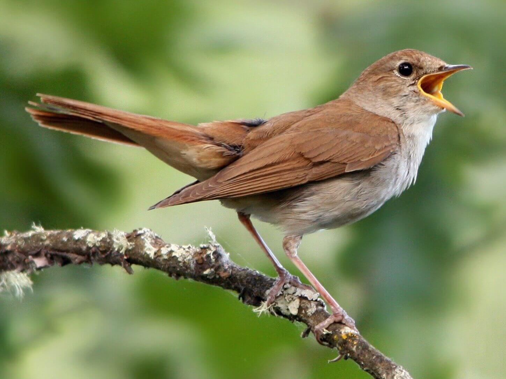
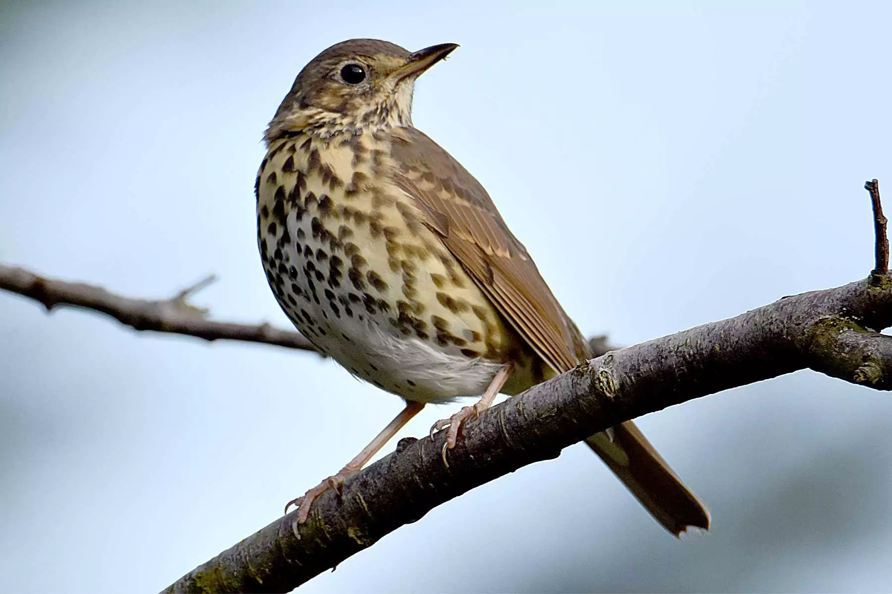
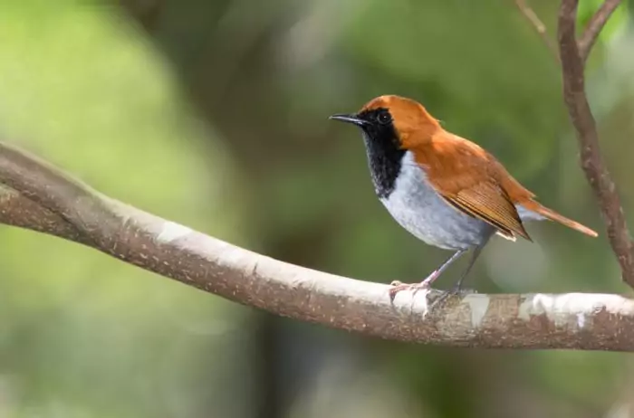
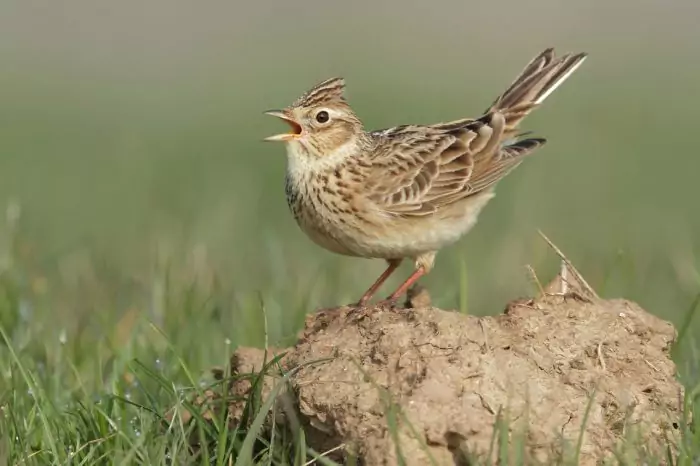
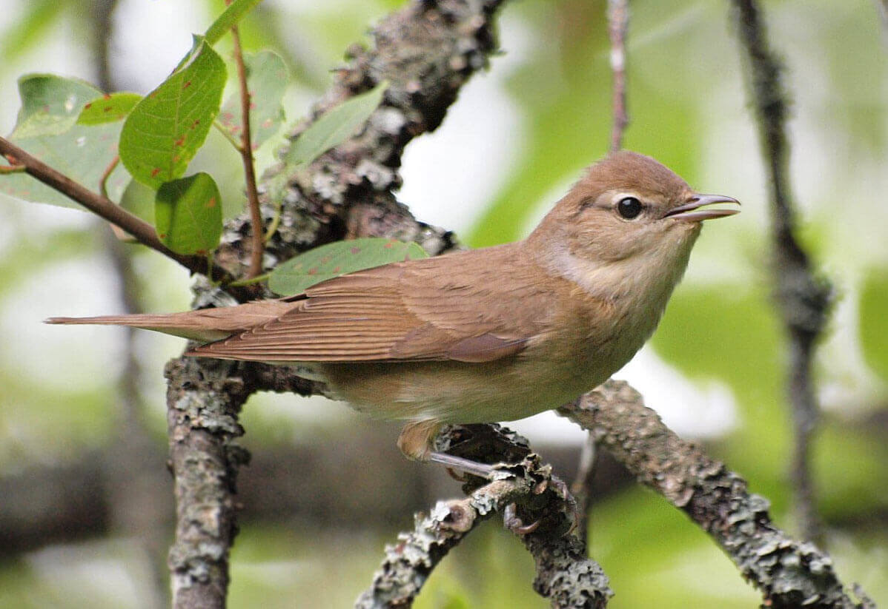

- Мелодичные трели птицы поют с начала мая и до конца лета.
- Каждая песня соловья состоит из 12 повторяющихся элементов, которые еще называют коленами.
- Ещё к интересным фактам относится то, что соловьи часто добавляют в свои мелодии также звуки других птиц.

- Дрозд — лучший певец из отряда воробьиных.
- Песня состоит только из красивых звучных свистов и коротких трелей.
- Часто ее слышно в утреннее и вечернее время.

- Песня малиновки - звенящая и является одной из самых красивых птичьих песен.
- Чаще всего она поёт ранним утром и перед заходом солнца.
- Песню зарянки(альтернативное название) легко узнать — её переливчатые свисты начинаются с короткого характерного скрипа.
- Она очень оптимистична.

- Песня жаворонков наполнено многочисленным количеством разнообразных и захватывающих звуков.
- Каждая фраза звучит с небольшим понижением тона.
- Пение жаворонков доставляет большинству удовольствие
- Жаворонки способны подражать звукам, которые издают птицы или животные.

- Поют и мужские, и женские особи, очень громко и звучно.
- Некоторые из них поют ритмично, отрывисто, другие – более нежно и мелодично, напоминая звучание флейты.
- Славки хорошо имитируют голоса других птиц, а в домашних условиях даже могут копировать человеческую речь.